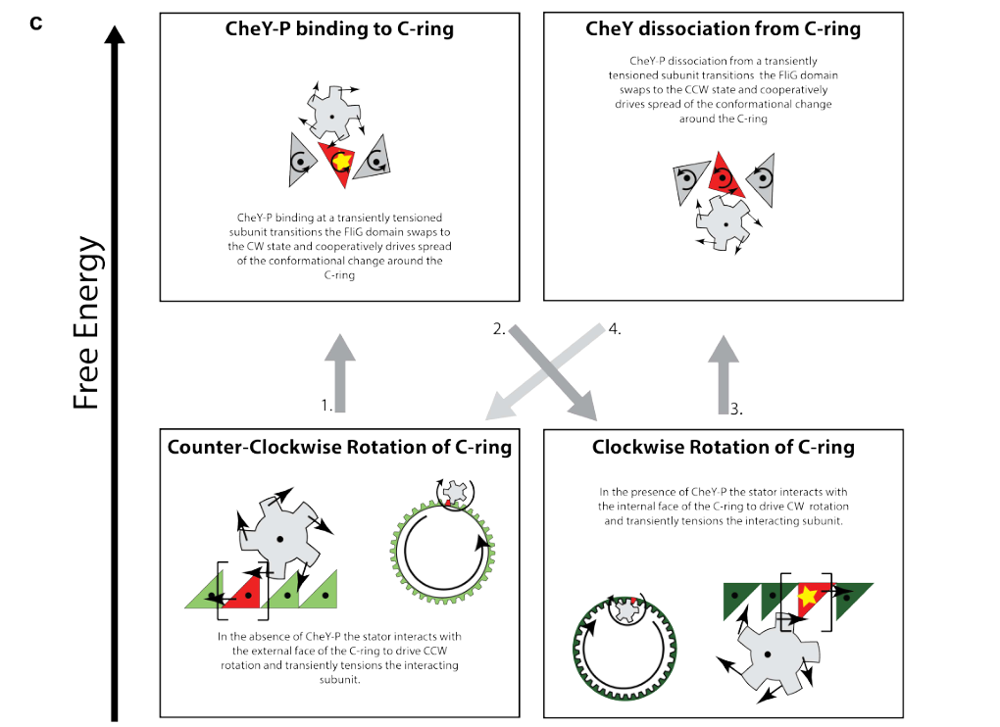

CheY (PP_4340) is the chemotaxis response regulator of Pseudomonas putida KT2440. It is a small (124 aa), single-domain receiver-type response regulator of the CheY/CheY-like superfamily, consisting essentially of a single REC (response regulatory) domain with a conserved phosphoaccepting aspartate (Asp52 in this protein) and a Mg2+ cofactor required for phosphochemistry. In the bacterial chemotaxis two-component signaling pathway, chemoreceptors regulate the histidine kinase CheA, which autophosphorylates and transfers the phosphoryl group to the active-site aspartate of CheY. Phosphorylated CheY (CheY-P) diffuses through the cytoplasm to the flagellar motor, where it binds the C-ring switch components (FliM/FliN) at the cytoplasmic face of the motor, shifting the rotational bias toward clockwise rotation and thereby causing cell tumbling and reorientation. The dephosphorylated state is restored by CheY-P dephosphorylation (by CheZ in canonical systems), giving the signal its transient, rapidly resettable character. Functionally, CheY acts as the diffusible output element of the chemosensory signal transduction system, converting receptor/kinase activity into changes in flagellar motor behavior and hence directed motility (chemotaxis).
| GO Term | Evidence | Action | Reason |
|---|---|---|---|
|
GO:0000160
phosphorelay signal transduction system
|
IEA
GO_REF:0000002 |
ACCEPT |
Summary: CheY is the response regulator (receiver domain) of the chemotaxis two-component/phosphorelay signaling system; it accepts a phosphoryl group from the histidine kinase CheA. This term correctly captures the core signaling role and is well supported by the conserved REC domain (IPR001789) and the conserved phosphoaccepting aspartate.
Reason: Directly reflects the central, well-established function of CheY as the response-regulator output of the chemotaxis phosphorelay. The InterPro-based IEA mapping is biologically appropriate and consistent with the domain architecture and with KT2440-specific evidence that CheY (PP_4340) is phosphorylated by CheA (PP_4338).
Supporting Evidence:
file:PSEPK/cheY/cheY-deep-research-falcon.md
Deep research synthesizes KT2440-specific and general chemotaxis evidence that CheY (PP_4340) is a chemosensory response regulator activated by phosphotransfer from the histidine kinase CheA (PP_4338), the defining step of the chemotaxis phosphorelay.
|
|
GO:0005737
cytoplasm
|
IEA
GO_REF:0000044 |
ACCEPT |
Summary: CheY is a soluble, diffusible cytoplasmic response regulator that shuttles between the receptor-associated CheA kinase complex and the cytoplasmic C-ring of the flagellar motor. A cytoplasmic localization is consistent with the receiver-domain-only architecture (no signal peptide or transmembrane segments) and with the established mechanism of CheY action.
Reason: Cytoplasmic localization is well supported for single-domain CheY response regulators and matches the UniProt subcellular location mapping. Although the action occurs at the motor, the protein itself is a freely diffusible cytoplasmic component.
|
Q: Does deletion of PP_4340 (cheY) in P. putida KT2440 produce the expected smooth-swimming (non-tumbling) chemotaxis-defective phenotype, and which of the multiple KT2440 chemosensory pathways does it serve?
Q: Which flagellar switch components (FliM/FliN/FliG) does P. putida CheY-P engage, and is the binding interface conserved relative to the E. coli paradigm?
Experiment: Construct a PP_4340 deletion mutant and assess swimming/tumbling behavior and chemotaxis toward defined attractants to confirm the predicted role in motor switching.
Experiment: Reconstitute CheA-CheY phosphotransfer in vitro with KT2440 proteins and measure phosphorylation kinetics and Mg2+ dependence at the active-site aspartate (Asp52).
The research report should be a detailed narrative explaining the function, biological processes, and localization of the gene product. Citations should be given for all claims.
You should prioritize authoritative reviews and primary scientific literature when conducting research. You can supplement
this with annotations you find in gene/protein databases, but these can be outdated or inaccurate.
We are specifically interested in the primary function of the gene - for enzymes, what reaction is catalyzed, and what is the substrate specificity? For transporters, what is the substrate? For structural proteins or adapters, what is the broader structural role? For signaling molecules, what is the role in the pathway.
We are interested in where in or outside the cell the gene product carries out its function.
We are also interested in the signaling or biochemical pathways in which the gene functions. We are less interested in broad pleiotropic effects, except where these elucidate the precise role.
Include evidence where possible. We are interested in both experimental evidence as well as inference from structure, evolution, or bioinformatic analysis. Precise studies should be prioritized over high-throughput, where available.
The UniProt accession Q88EW2 is specified as CheY (gene cheY; ordered locus name PP_4340) from Pseudomonas putida strain KT2440. Two independent KT2440-focused publications explicitly refer to CheY (PP_4340) as a chemotaxis/chemosensory response regulator, supporting that the symbol cheY in this report matches the intended protein identity and organism context rather than another bacterial CheY homolog. Specifically, PP_4340 is annotated as “Chemotaxis protein CheY” and placed within a motility/chemotaxis gene neighborhood that includes PP_4338, and it is transcriptionally downregulated in a KT2440 flagellar sigma-factor mutant. (navarro‐aviles2010physiologicalandtranscriptomic pages 4-5, he2022geneticcodeexpansion pages 6-7)
Bacterial chemotaxis is a sensory–response pathway that modulates the bias of flagellar motor rotation (e.g., counterclockwise vs clockwise) to produce directed migration in chemical gradients. In the canonical framework, chemoreceptors regulate a histidine kinase CheA, which phosphorylates the response regulator CheY; phosphorylated CheY (CheY-P) then directly modulates the flagellar motor by binding switch components, thereby changing the probability of clockwise rotation. This CheA→CheY phosphotransfer and motor control role is widely accepted and is explicitly stated in a chemotaxis review that includes Pseudomonas systems. (sampedro2015pseudomonaschemotaxis. pages 3-5)
A 2024 authoritative review of chemotaxis in the context of biased migration emphasizes that increasing CheA activity increases CheY-P, and that CheY-P binds motor switch complexes (FliM/FliN) to increase the clockwise (CW) bias. (antani2024reassessingthestandard pages 1-3)
CheY proteins are typically single-domain response regulators (receiver domains) that are activated by phosphorylation of a conserved aspartate in the active site. In a 2024 structural analysis of directional switching, CheY is modeled in its phosphorylated form with the phosphorylated residue D57 oriented toward the FliG/FliM interface in the switch complex, consistent with the classical receiver-domain phosphorylation mechanism and its coupling to motor switching. (johnson2024structuralbasisof pages 7-10)
Functionally, CheY is a diffusible cytosolic signal carrier between the receptor-associated kinase complex and the flagellar motor, acting at the cytoplasmic face of the motor’s C-ring/switch (via interaction with FliM and related switch components). While direct fluorescence localization of P. putida KT2440 PP_4340 CheY was not retrieved here, the mechanistic placement of CheY action at the motor C-ring (cytoplasmic) is supported by modern structural work and by general pathway descriptions. (sampedro2015pseudomonaschemotaxis. pages 3-5, johnson2024structuralbasisof pages 1-5)
A KT2440 transcriptomic study of a fliA mutant (σ factor for flagellar genes) identifies PP_4340 explicitly as “Chemotaxis protein CheY” and reports it is downregulated with fold change −2.8 (Table 1). The same work groups PP_4340 within a proposed operon/gene block PP4340–PP4338, consistent with cheY being part of a chemotaxis/motility module under flagellar regulon control. (navarro‐aviles2010physiologicalandtranscriptomic pages 4-5)
A 2022 KT2440 synthetic biology study (genetic code expansion) uses CheY as an exemplar “chemosensory response regulator in chemotaxis” and explicitly refers to CheY (PP_4340) as activated by phosphorylation by CheA (PP_4338). The authors incorporated a photocrosslinking amino acid (pBpa) into CheY at selected permissive positions (chosen using a CheY/CheA structural template), and proteomics of crosslinked material identified CheA among crosslinked species—supporting a CheY–CheA interaction in KT2440 under their experimental conditions. (he2022geneticcodeexpansion pages 6-7)
CheA-dependent phosphorylation of CheY is the defining biochemical step coupling receptor/kinase activity to motor control. This is stated in an authoritative Pseudomonas chemotaxis review, and biochemical assays in Pseudomonas putida context demonstrate phosphate transfer from phosphorylated CheA to CheY (radiolabel transfer with concomitant decrease in CheA signal), consistent with cognate phosphotransfer. (sampedro2015pseudomonaschemotaxis. pages 3-5, he2025coordinatedregulationof pages 3-5)
A 2024 structural study in Nature Microbiology resolves key elements of how CheY-P binding to FliM stabilizes the clockwise motor conformation. It reports that CheY-P binds the extreme N-terminus of FliM, and modeling supports a consistent CheY binding interface with the phosphorylated residue D57 oriented toward the FliG–FliM interface; CheY binding is consistent with the CW structural state and is proposed to “lock” the switch interface in the CW conformation. (johnson2024structuralbasisof pages 7-10)
Complementarily, a 2024 Annual Review article summarizes the motor output as a sensitive, cooperative response to CheY-P: CheY-P binds FliM and FliN at the base of the motor, increasing the probability of CW rotation (CW bias), and the CW-bias response is sigmoidal with a high Hill coefficient. (antani2024reassessingthestandard pages 1-3)
Recent structural work provides quantitative constraints on CheY-mediated switching:
The 2024 Nature Microbiology work provides a modern mechanistic picture in which CheY-P binding biases the C-ring into a CW conformation, associated with changes that relocate stator interactions (outside vs inside wall models) and thereby reverse rotation direction. This refines earlier, more phenomenological models of CheY action and enables explicit structural hypotheses for how CheY-P “locks” motor interfaces during switching. (johnson2024structuralbasisof pages 7-10, johnson2024structuralbasisof pages 1-5)
Although not KT2440-specific, a 2024 Annual Review of Microbiology article emphasizes that many bacteria diverge from the E. coli paradigm in chemotaxis system architecture, sensory strategies, and protein composition; this is relevant for Pseudomonas because many species encode multiple chemosensory pathways and accessory components. This strengthens the interpretive stance that KT2440 CheY is canonical at the receiver-domain level, but system-level regulation may be more complex than the textbook pathway. (antani2024reassessingthestandard pages 1-3)
The 2022 KT2440 genetic code expansion study is an example of an applied, real-world implementation in which CheY (PP_4340) was engineered to incorporate a photocrosslinker for protein–protein interaction studies. In practice, this extends KT2440’s experimental toolkit for interrogating chemotaxis signaling complexes (e.g., CheY–CheA associations) in an organism widely used as a biotechnology chassis. (he2022geneticcodeexpansion pages 6-7)
The concept that motility/chemotaxis pathways are actionable targets (e.g., for reducing pathogenic colonization) is supported by recent review-level discussion; while not KT2440-specific, it reflects the broader translational importance of chemotaxis regulators like CheY in microbial ecology and biotechnology contexts. (antani2024reassessingthestandard pages 1-3)
A schematic depiction of CheY-P-driven directional switching and its coupling to motor conformational changes is available from a 2024 structural study (Figure 6c). (johnson2024structuralbasisof media 93561bae)
| Claim/Observation | Evidence summary | Organism/Context (KT2440-specific vs general) | Year | Source (with URL) | Citation ID |
|---|---|---|---|---|---|
| UniProt Q88EW2 matches cheY / PP_4340 in Pseudomonas putida KT2440 | KT2440 transcriptomic data explicitly annotate PP_4340 as “Chemotaxis protein CheY” (gene cheY); the gene is part of a motility/chemotaxis region and is downregulated in a fliA mutant with fold change −2.8 | KT2440-specific | 2010 | Navarro-Avilés & Van Dillewijn, DOI: https://doi.org/10.1111/j.1758-2229.2009.00084 | (navarro‐aviles2010physiologicalandtranscriptomic pages 4-5) |
| PP_4340 likely lies in a local chemotaxis operon/gene neighborhood | The KT2440 study identifies a potential operon region PP4340 to PP4338, placing cheY (PP_4340) adjacent to other motility/chemotaxis genes | KT2440-specific | 2010 | Navarro-Avilés & Van Dillewijn, DOI: https://doi.org/10.1111/j.1758-2229.2009.00084 | (navarro‐aviles2010physiologicalandtranscriptomic pages 4-5) |
| CheY in KT2440 functions as a chemosensory response regulator downstream of CheA | In a KT2440 protein-engineering study, CheY is described as “a chemosensory response regulator in chemotaxis,” activated by phosphorylation from the upstream histidine kinase CheA (PP_4338); photocrosslinking/proteomics supported a CheY–CheA interaction | KT2440-specific | 2022 | He et al., ACS Synthetic Biology, DOI: https://doi.org/10.1021/acssynbio.2c00325 | (he2022geneticcodeexpansion pages 6-7) |
| Core biochemical role: CheA transfers phosphate to CheY | Chemotaxis review states CheA phosphorylates CheY; a P. putida biochemical study shows radiolabeled phosphate transfer from phosphorylated CheA to CheY | General chemotaxis mechanism with Pseudomonas support | 2015; 2025 | Sampedro et al., https://doi.org/10.1111/1574-6976.12081; He et al., https://doi.org/10.7554/elife.100914.2 | (he2025coordinatedregulationof pages 3-5, sampedro2015pseudomonaschemotaxis. pages 3-5) |
| Canonical output of CheY is control of the flagellar motor | Review states CheY transmits the chemotaxis signal to flagellar motors; this is the accepted functional role used to annotate Pseudomonas CheY proteins by homology | General, applicable to KT2440 by homology | 2015 | Sampedro et al., FEMS Microbiology Reviews, https://doi.org/10.1111/1574-6976.12081 | (sampedro2015pseudomonaschemotaxis. pages 3-5) |
| CheY-P is normally reset by CheZ phosphatase in canonical systems | The review notes CheY-P dephosphorylation is performed by CheZ, defining the transient nature of signaling output in canonical chemotaxis pathways | General | 2015 | Sampedro et al., FEMS Microbiology Reviews, https://doi.org/10.1111/1574-6976.12081 | (sampedro2015pseudomonaschemotaxis. pages 3-5) |
| Recent structural work shows CheY-P promotes CW switching by binding the C-ring | Structural studies show phosphorylated CheY binds the flagellar switch/C-ring, especially FliM, stabilizing the clockwise (CW) state and biasing motor rotation away from default counterclockwise (CCW) rotation | General mechanism | 2024 | Johnson et al., Nature Microbiology, https://doi.org/10.1038/s41564-024-01630-z | (johnson2024structuralbasisof pages 7-10, johnson2024structuralbasisof pages 1-5) |
| CheY binding site/mechanism involves FliM/FliN and likely remodels FliG-related interfaces | Review-level synthesis states CheY-P binds FliM and FliN at the motor base to raise CW bias; structural work places the phosphorylated residue near the FliG/FliM interface and supports conformational stabilization of the CW state | General mechanism | 2024 | Antani et al., https://doi.org/10.1146/annurev-chembioeng-100722-114625; Johnson et al., https://doi.org/10.1038/s41564-024-01630-z | (johnson2024structuralbasisof pages 7-10, antani2024reassessingthestandard pages 1-3) |
| Conserved phosphorylation site is Asp57 in model CheY proteins | A 2024 structural study explicitly models the phosphorylated residue D57 of CheY toward the FliG/FliM interface; this supports inference that KT2440 CheY, a canonical receiver-domain regulator, uses the conserved receiver Asp mechanism | General, strong homology-based inference for KT2440 | 2024 | Johnson et al., Nature Microbiology, https://doi.org/10.1038/s41564-024-01630-z | (johnson2024structuralbasisof pages 7-10) |
| Motor switching is highly cooperative and sensitive to CheY-P levels | Review notes the motor response to CheY-P is sigmoidal with Hill coefficient about 10–20, meaning small signaling changes can strongly alter CW/CCW bias | General quantitative mechanism | 2024 | Antani et al., https://doi.org/10.1146/annurev-chembioeng-100722-114625 | (antani2024reassessingthestandard pages 1-3) |
| Structural stoichiometry supports a dedicated CheY-associated CW motor state | Cryo-EM study reports a CW C-ring with stoichiometry 34 FliG / 34 FliM / 102 FliN / 34 CheY compared with a CCW C-ring lacking the CheY subring, supporting direct structural coupling of CheY binding to motor switching | General quantitative mechanism | 2024 | Tan et al., Cell Research, https://doi.org/10.1101/2024.04.30.591856 | (tan2024structuralbasisof pages 3-4) |
| Cellular localization of CheY is expected to be cytoplasmic/diffusible, acting at the pole-localized motor | CheY is described as a diffusible response regulator that carries signal from CheA to the flagellar motor; recent structural/mechanistic work places its action at the cytoplasmic C-ring of the motor. Direct localization for KT2440 PP_4340 was not found in the retrieved papers | General mechanism; KT2440-specific localization remains indirect | 2015; 2024 | Sampedro et al., https://doi.org/10.1111/1574-6976.12081; Johnson et al., https://doi.org/10.1038/s41564-024-01630-z | (sampedro2015pseudomonaschemotaxis. pages 3-5, johnson2024structuralbasisof pages 1-5) |
Table: This table summarizes the strongest evidence linking UniProt Q88EW2 to cheY/PP_4340 in Pseudomonas putida KT2440 and places that evidence in the context of current CheY mechanism from recent structural and review literature. It is useful for separating direct KT2440-specific evidence from broader, well-supported functional inference.
Direct KT2440 cheY (PP_4340) knockout/point-mutant phenotypes, direct cellular localization microscopy for PP_4340, and direct measurements of phosphorylation kinetics for KT2440 CheY were not retrieved in the available set. Therefore, pathway role and localization are based on (i) KT2440 gene/protein identification and CheA association evidence and (ii) high-confidence homology and modern structural mechanism from other bacteria. (he2022geneticcodeexpansion pages 6-7, johnson2024structuralbasisof pages 7-10, antani2024reassessingthestandard pages 1-3)
References
(navarro‐aviles2010physiologicalandtranscriptomic pages 4-5): G Navarro‐Avilés and P Van Dillewijn. Physiological and transcriptomic characterization of a flia mutant of pseudomonas putida kt2440. Unknown journal, 2010. URL: https://doi.org/10.1111/j.1758-2229.2009.00084, doi:10.1111/j.1758-2229.2009.00084.
(he2022geneticcodeexpansion pages 6-7): Xinyuan He, Tianyu Gao, Yan Chen, Kun Liu, Jiantao Guo, and Wei Niu. Genetic code expansion in pseudomonas putida kt2440. ACS synthetic biology, 11:3724-3732, Oct 2022. URL: https://doi.org/10.1021/acssynbio.2c00325, doi:10.1021/acssynbio.2c00325. This article has 15 citations and is from a domain leading peer-reviewed journal.
(sampedro2015pseudomonaschemotaxis. pages 3-5): Inmaculada Sampedro, Rebecca E. Parales, Tino Krell, and Jane E. Hill. Pseudomonas chemotaxis. FEMS microbiology reviews, 39 1:17-46, Oct 2015. URL: https://doi.org/10.1111/1574-6976.12081, doi:10.1111/1574-6976.12081. This article has 346 citations and is from a domain leading peer-reviewed journal.
(antani2024reassessingthestandard pages 1-3): Jyot D. Antani, Aakansha Shaji, Rachit Gupta, and Pushkar P. Lele. Reassessing the standard chemotaxis framework for understanding biased migration in helicobacter pylori. Jul 2024. URL: https://doi.org/10.1146/annurev-chembioeng-100722-114625, doi:10.1146/annurev-chembioeng-100722-114625. This article has 8 citations and is from a peer-reviewed journal.
(johnson2024structuralbasisof pages 7-10): Steven Johnson, Justin C. Deme, Emily J. Furlong, Joseph J. E. Caesar, Fabienne F. V. Chevance, Kelly T. Hughes, and Susan M. Lea. Structural basis of directional switching by the bacterial flagellum. Nature microbiology, 9:1282-1292, Mar 2024. URL: https://doi.org/10.1038/s41564-024-01630-z, doi:10.1038/s41564-024-01630-z. This article has 59 citations and is from a highest quality peer-reviewed journal.
(johnson2024structuralbasisof pages 1-5): Steven Johnson, Justin C. Deme, Emily J. Furlong, Joseph J. E. Caesar, Fabienne F. V. Chevance, Kelly T. Hughes, and Susan M. Lea. Structural basis of directional switching by the bacterial flagellum. Nature microbiology, 9:1282-1292, Mar 2024. URL: https://doi.org/10.1038/s41564-024-01630-z, doi:10.1038/s41564-024-01630-z. This article has 59 citations and is from a highest quality peer-reviewed journal.
(he2025coordinatedregulationof pages 3-5): Meina He, Yongxin Tao, Kexin Mu, Haoqi Feng, Ying Fan, Tong Liu, Qiaoyun Huang, Yujie Xiao, and Wenli Chen. Coordinated regulation of chemotaxis and resistance to copper by csor in pseudomonas putida. ArXiv, Jan 2025. URL: https://doi.org/10.7554/elife.100914.2, doi:10.7554/elife.100914.2. This article has 4 citations.
(tan2024structuralbasisof pages 3-4): Jiaxing Tan, Ling Zhang, Xingtong Zhou, Siyu Han, Yan-Jie Zhou, and Yongqun Zhu. Structural basis of the bacterial flagellar motor rotational switching. Cell Research, 34:788-801, Apr 2024. URL: https://doi.org/10.1101/2024.04.30.591856, doi:10.1101/2024.04.30.591856. This article has 44 citations and is from a domain leading peer-reviewed journal.
(johnson2024structuralbasisof media 93561bae): Steven Johnson, Justin C. Deme, Emily J. Furlong, Joseph J. E. Caesar, Fabienne F. V. Chevance, Kelly T. Hughes, and Susan M. Lea. Structural basis of directional switching by the bacterial flagellum. Nature microbiology, 9:1282-1292, Mar 2024. URL: https://doi.org/10.1038/s41564-024-01630-z, doi:10.1038/s41564-024-01630-z. This article has 59 citations and is from a highest quality peer-reviewed journal.

id: Q88EW2
gene_symbol: cheY
product_type: PROTEIN
status: DRAFT
taxon:
id: NCBITaxon:160488
label: Pseudomonas putida (strain ATCC 47054 / DSM 6125 / CFBP 8728 / NCIMB 11950 / KT2440)
description: >-
CheY (PP_4340) is the chemotaxis response regulator of Pseudomonas putida KT2440.
It is a small (124 aa), single-domain receiver-type response regulator of the
CheY/CheY-like superfamily, consisting essentially of a single REC (response
regulatory) domain with a conserved phosphoaccepting aspartate (Asp52 in this
protein) and a Mg2+ cofactor required for phosphochemistry. In the bacterial
chemotaxis two-component signaling pathway, chemoreceptors regulate the histidine
kinase CheA, which autophosphorylates and transfers the phosphoryl group to the
active-site aspartate of CheY. Phosphorylated CheY (CheY-P) diffuses through the
cytoplasm to the flagellar motor, where it binds the C-ring switch components
(FliM/FliN) at the cytoplasmic face of the motor, shifting the rotational bias
toward clockwise rotation and thereby causing cell tumbling and reorientation. The
dephosphorylated state is restored by CheY-P dephosphorylation (by CheZ in canonical
systems), giving the signal its transient, rapidly resettable character.
Functionally, CheY acts as the diffusible output element of the chemosensory signal
transduction system, converting receptor/kinase activity into changes in flagellar
motor behavior and hence directed motility (chemotaxis).
existing_annotations:
- term:
id: GO:0000160
label: phosphorelay signal transduction system
evidence_type: IEA
original_reference_id: GO_REF:0000002
qualifier: involved_in
review:
summary: >-
CheY is the response regulator (receiver domain) of the chemotaxis
two-component/phosphorelay signaling system; it accepts a phosphoryl group from
the histidine kinase CheA. This term correctly captures the core signaling role
and is well supported by the conserved REC domain (IPR001789) and the conserved
phosphoaccepting aspartate.
action: ACCEPT
reason: >-
Directly reflects the central, well-established function of CheY as the
response-regulator output of the chemotaxis phosphorelay. The InterPro-based IEA
mapping is biologically appropriate and consistent with the domain architecture
and with KT2440-specific evidence that CheY (PP_4340) is phosphorylated by CheA
(PP_4338).
supported_by:
- reference_id: file:PSEPK/cheY/cheY-deep-research-falcon.md
supporting_text: >-
Deep research synthesizes KT2440-specific and general chemotaxis evidence that
CheY (PP_4340) is a chemosensory response regulator activated by phosphotransfer
from the histidine kinase CheA (PP_4338), the defining step of the chemotaxis
phosphorelay.
- term:
id: GO:0005737
label: cytoplasm
evidence_type: IEA
original_reference_id: GO_REF:0000044
qualifier: located_in
review:
summary: >-
CheY is a soluble, diffusible cytoplasmic response regulator that shuttles
between the receptor-associated CheA kinase complex and the cytoplasmic C-ring of
the flagellar motor. A cytoplasmic localization is consistent with the
receiver-domain-only architecture (no signal peptide or transmembrane segments)
and with the established mechanism of CheY action.
action: ACCEPT
reason: >-
Cytoplasmic localization is well supported for single-domain CheY response
regulators and matches the UniProt subcellular location mapping. Although the
action occurs at the motor, the protein itself is a freely diffusible cytoplasmic
component.
core_functions:
- description: >-
Receiver/response-regulator component of the chemotaxis phosphorelay that accepts a
phosphoryl group on its conserved active-site aspartate from the histidine kinase
CheA.
supported_by:
- reference_id: PMID:36287825
full_text_unavailable: true
supporting_text: >-
KT2440 study describes CheY (PP_4340) as a chemosensory response regulator
activated by phosphorylation from the upstream histidine kinase CheA (PP_4338),
with photocrosslinking/proteomics supporting a CheY-CheA interaction.
- reference_id: PMID:25100612
full_text_unavailable: true
supporting_text: >-
Pseudomonas chemotaxis review states CheA phosphorylates CheY, the diffusible
response regulator that transmits the chemotaxis signal to the flagellar motor.
molecular_function:
id: GO:0000156
label: phosphorelay response regulator activity
directly_involved_in:
- id: GO:0000160
label: phosphorelay signal transduction system
- id: GO:0006935
label: chemotaxis
- description: >-
As phosphorylated CheY-P, binds the flagellar motor switch (C-ring; FliM/FliN) to
bias rotation toward clockwise, controlling tumbling and hence chemotactic motility.
supported_by:
- reference_id: PMID:25100612
full_text_unavailable: true
supporting_text: >-
Review describes CheY as transmitting the chemotaxis signal to the flagellar
motor, with CheY-P modulating motor rotational bias.
directly_involved_in:
- id: GO:0006935
label: chemotaxis
proposed_new_terms: []
suggested_questions:
- question: Does deletion of PP_4340 (cheY) in P. putida KT2440 produce the expected smooth-swimming (non-tumbling) chemotaxis-defective phenotype, and which of the multiple KT2440 chemosensory pathways does it serve?
- question: Which flagellar switch components (FliM/FliN/FliG) does P. putida CheY-P engage, and is the binding interface conserved relative to the E. coli paradigm?
suggested_experiments:
- description: Construct a PP_4340 deletion mutant and assess swimming/tumbling behavior and chemotaxis toward defined attractants to confirm the predicted role in motor switching.
- description: Reconstitute CheA-CheY phosphotransfer in vitro with KT2440 proteins and measure phosphorylation kinetics and Mg2+ dependence at the active-site aspartate (Asp52).
references:
- id: file:PSEPK/cheY/cheY-deep-research-falcon.md
title: Deep research report on cheY (PP_4340) in Pseudomonas putida KT2440
findings: []
- id: GO_REF:0000002
title: Gene Ontology annotation through association of InterPro records with GO terms
findings: []
- id: GO_REF:0000044
title: Gene Ontology annotation based on UniProtKB/Swiss-Prot Subcellular Location vocabulary mapping, accompanied by conservative changes to GO terms applied by UniProt
findings: []
- id: PMID:36287825
title: Genetic Code Expansion in Pseudomonas putida KT2440
findings:
- statement: >-
KT2440 CheY (PP_4340) is described as a chemosensory response regulator activated
by phosphorylation from CheA (PP_4338); photocrosslinking proteomics supported a
CheY-CheA interaction in KT2440.
reference_section_type: RESULTS
reference_review:
relevance: HIGH
correctness: VERIFIED
review_notes: >-
Corrected identifier. The deep-research report's original PMID:36346907 was a
wrong identifier (resolved to an unrelated kill-switch toxin paper). The intended
paper is He et al. 2022 (DOI 10.1021/acssynbio.2c00325); doi_to_pmid resolved this
to PMID:36287825, whose PubMed title "Genetic Code Expansion in Pseudomonas putida
KT2440" matches. Abstract-only in cache.
- id: PMID:25100612
title: Pseudomonas chemotaxis
findings:
- statement: >-
CheA phosphorylates CheY; CheY-P is the diffusible response regulator that
transmits the chemotaxis signal to the flagellar motor and is dephosphorylated by
CheZ in canonical systems.
reference_section_type: RESULTS
reference_review:
relevance: HIGH
correctness: VERIFIED
review_notes: >-
Corrected identifier. The deep-research report's original PMID:26442807 was a
wrong identifier (resolved to an unrelated geology paper). The intended paper is
Sampedro et al. 2015 "Pseudomonas chemotaxis" (FEMS Microbiology Reviews, DOI
10.1111/1574-6976.12081); doi_to_pmid resolved this to PMID:25100612, whose PubMed
title matches. Abstract-only in cache.
{kind=link}